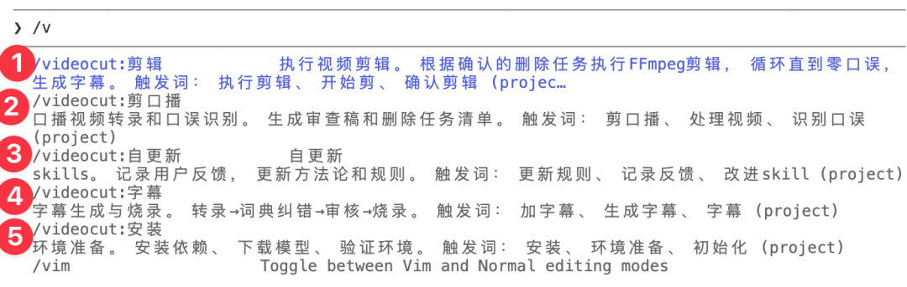
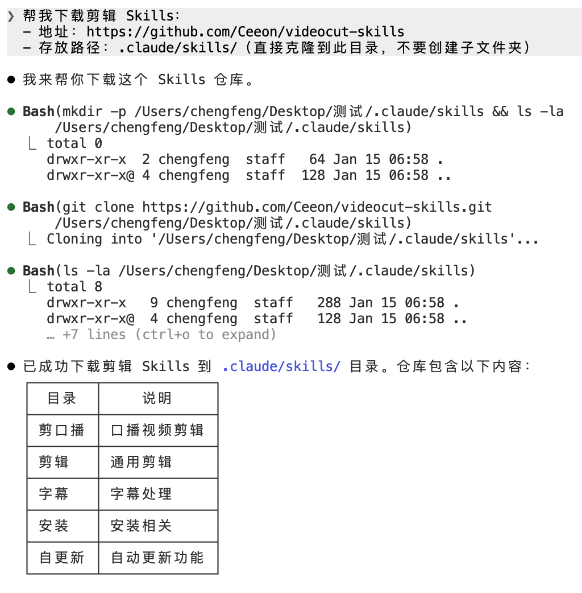
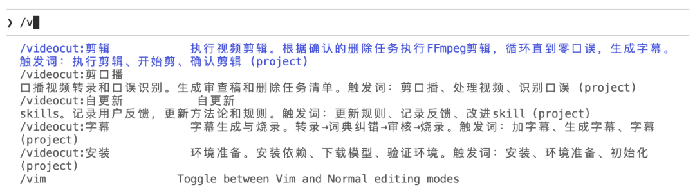
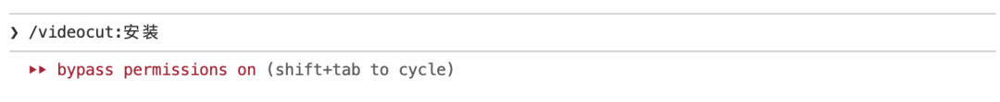
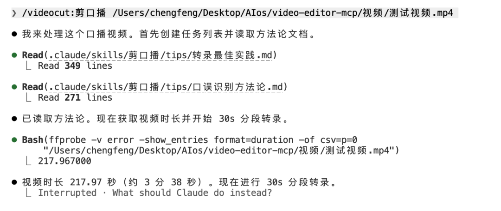
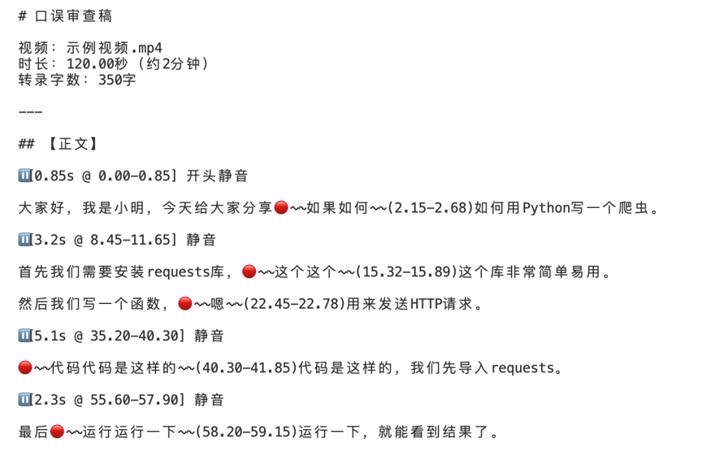
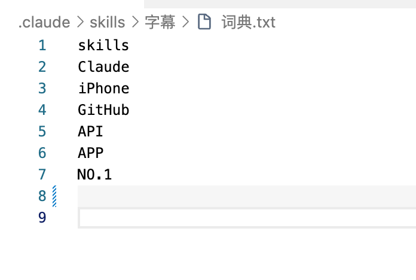
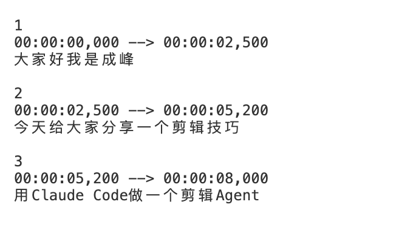

大家好，我是成峰。
我花了一周时间，用剪辑skills，做了一个剪辑Agent。
真的爽！
10分钟就能自动剪一条半个小时的视频。
我经常用剪映剪口播视频，但用久了发现几个问题：
问题1：智能剪口播无法理解语义
因为无法理解语义，导致一些重复的片段没有识别出来。如果我一口气说二三十分钟，自己剪就非常累。
问题2：字幕质量不好
自动生成的字幕错别字多。
所以我用 Claude Code 的 Skills 功能，做了一个剪辑 Agent。
根本区别很简单：
关键差异：
剪映 = 固定工具 + 手工操作
Agent = 自适应系统 + 自动学习
我不是在用更好的算法替换剪映，而是在用一个会自我完善的系统替换了剪映。
但这还不是最厉害的。
最厉害的是：它会越用越懂你，越来越快
三个核心设计
1. Agent逻辑
只需要4步：
2. Skills 技能系统
以前我把所有功能做成一个大 skill，需要加指令才能区分不同任务，很麻烦。
现在我把剪辑的 5 个核心任务，分别做成了 5 个独立的 skills，放到 .claude/skills/ 目录里。这样更清晰，选择也更方便。
当你输入 /v，Claude Code 就会自动列出这 5 个可用的技能：

你选一个，AI 就执行那个技能。简单吧？ 原来需要 10 分钟的手工操作，现在只要选一下菜单。
所有方法论都写在 Skills 里，你不用每次重复说明。
分成多个独立 skills 的核心原因是：人需要检查阶段性的产出。比如我需要看一下审查稿是否正确，确认后再执行剪辑。
3. 自更新机制：越用越懂你
这是我最得意的设计。每次执行任务后，你都可以给反馈，AI 会把反馈永久保存到 Skills 里。
关键点： Skills 从一套通用规则，逐渐变成了只属于你的定制化方案。
用 10 次，它就知道你 80% 的习惯。用 50 次，它就完全符合你的需求。
用得越多，Skills 越个性化，越懂你 —— 这就是自更新的威力
具体操作
第一步：下载 Skills
打开一个新的文件夹，后续你就可以把这个文件夹当做专门处理剪辑的空间，这就更加方便。
帮我下载剪辑 Skills：
- 地址：https://github.com/Ceeon/videocut-skills
- 存放路径：.claude/skills/（直接克隆到此目录，不要创建子文件夹）
然后它就会自行下载，这个过程是很快的。

然后我们重启就能看到这些skills。

第二步：安装环境
输入 /v，选择 videocut:安装。

AI 会自动安装依赖、下载模型（约5GB）：
FunASR：口误识别用
Whisper：字幕生成用
这两个模型各有优势：FunASR 适合做字级别的剪辑（识别口误、语气词），Whisper 做字幕质量更好。
第三步：剪口播
输入 /v，选择 videocut:剪口播，然后告诉 AI 你的视频文件路径。

AI 会自动：
1.转录视频
2.识别口误（逐句检查，不漏一个）
3.识别语气词（嗯、哎、诶等）
4.识别静音（≥1s）
5.生成审查稿

审查稿中，停止符号（⏸️）表示静音片段，需要删除。红点后面的波浪线（🔴～～）表示重复的片段，也需要删除。如果你想要其他格式，可以告诉 AI，让它修改成符合你要求的格式。
关键： 审查稿出来后，你看一遍。如果有不满意的地方（比如"我想保留更多的嗯"，或者"这个词识别错了"），继续跟 AI 沟通，直到满意。
然后输入 /v，选择 videocut:自更新，AI 会把这次的调整记录到 Skills 里。
确认后，自动执行剪辑。
第四步：加字幕
重点：自定义词典 = 字幕准确率翻倍
Skills 里预置了一个词典文件：
.claude/skills/videocut:字幕/词典.txt
打开这个文件，你会看到已经预设的词汇：

你只需要在这个文件里添加你的专有名词就行。 比如你的公司名、产品名、频道名等：
成峰的频道
AI产品自由
我的品牌名
预先录入字典，这样 AI 执行加字幕时，就会自动用你的词典去纠正模型的错误。第一次就准确。
然后输入 /v，选择 videocut:字幕。
AI 会自动：
1.Whisper 转录
2.词典纠正错别字（用你自定义的词典）
3.生成字幕文件

4.AI 会让你确认字幕是否正确
5.确认无误后，烧录到视频
关键： 如果后来发现字典里漏了什么词，也可以随时用 /v 选 videocut:自更新 补充。
四步搞定，全程自动化。
总结
最后给出的结果，效果和剪映手动剪辑的结果基本一致！
如果你经常剪口播视频，强烈推荐试试。记得一定要用自更新机制，这样 Agent 会越用越懂你。
如果你还有更复杂的需求，或者在使用过程中遇到问题，欢迎在群里沟通交流。
群满可+v，发20红包拉群